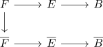
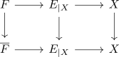
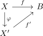
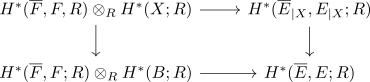
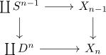
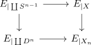

Leray-Hirsch Theorem
Proposition
Let $R$ be a commutative ring,
Given a commutative diagram of fibration sequences

w.l.o.g. assume that $B$ is connected (otherwise argue for each connceted component)
be homogeneous elements in the relative singular cohomology such that each degree only contains finitely many elements.
Assume that the image of $x_i$ under
forms an \(R\)-basis where the right side is free
then the map
is a module-isomorphism of \(H^*(B,R)\)-modules
where the map is given by
Proof
Let
be a map by abuse of notation, write $E_{\vert X}$ instead of $f^{*}(E)$ for the pullback of a fibration
Then we get the commutative diagram

This gives us elements
by functorality of the relative homology
The same argument gives a map
now $\Phi_{\pi_k}$ as the components of a natural transformations

We may assume that $X$ is a CW-Complex by CW-Approximation and the fact that singular cohomology is weak homotopy invariant
Hence we will restrict to the case
We will only consider the map of underlying sets, since the forgetful functor is conservative
Goal: We show that
is an isomorphism (cf. natural isomorphism and isomorphism on the objects)

pullback of a trivial fibration as trivial fibration
finite dimensional cw
Lets proof that $\Phi_{\pi_X}$ is an isomorphism for all $X \rightarrow B$ where $X$ is a finite dimensional CW-complex
induction basis
Assume that
then
Thne
since
induction step
Suppose

is a pushout
Then

is a homotopy pushout (cf. fibration satisfy descend)